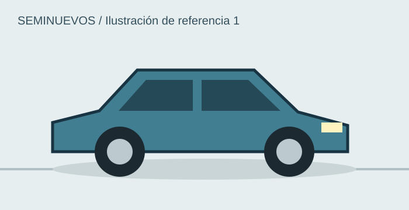
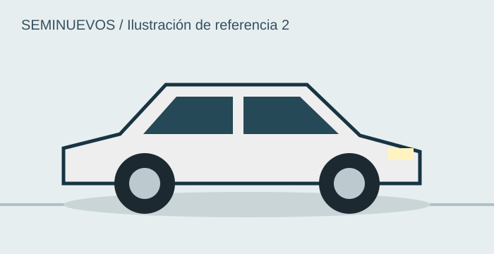
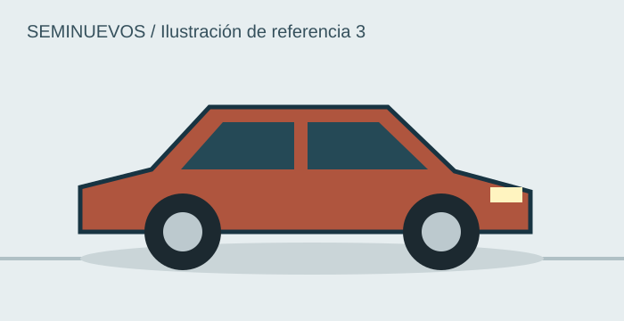

Geely Coolray 2024
$350,000 MXN · 24,000 km
DisponibleConsulta, compara y conoce tu siguiente automóvil.
El catálogo reúne opciones de seminuevos para comparar año, precio y kilometraje en un solo lugar. Las unidades mostradas son ejemplos del proyecto escolar.
Antes de elegir un automóvil conviene revisar el uso que se le dará. El espacio, la transmisión y el consumo pueden ser tan importantes como el precio.
Los datos del inventario se guardarán en automoviles y marcas. Esta actividad presenta una maqueta estática; la conexión con MySQL corresponde a una etapa posterior.

$350,000 MXN · 24,000 km
Disponible
$280,000 MXN · 36,000 km
Disponible
$220,000 MXN · 45,000 km
Vendido